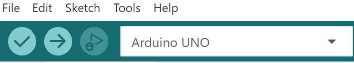

מעלים לארדואינו קוד חדש שגורם ללד L להבהב מהר יותר. זו ההעלאה הראשונה שלכם.
פותחים את הקובץ 01_blink_L_fast.ino ב־Arduino IDE.
הקובץ נמצא בתיקיית פרויקט 1 שלכם, בתוך ino_files/01_blink_L_fast/
בסרגל הכלים מוצאים את כפתור ה־Upload — הכפתור עם החץ שפונה ימינה.

לוחצים על Upload ועוקבים אחר סרגל ההתקדמות בתחתית ה־IDE.
כשההעלאה מסתיימת, מופיעה בתחתית ההודעה הירוקה:
מביטים בלד L על הלוח — הוא אמור להבהב עכשיו מהר יותר, בערך שלוש פעמים בשנייה.
// Blinks the built-in "L" LED faster than the factory sketch. void setup() { pinMode(LED_BUILTIN, OUTPUT); } void loop() { digitalWrite(LED_BUILTIN, HIGH); delay(150); digitalWrite(LED_BUILTIN, LOW); delay(150); }
הלד הירוק L על הלוח מהבהב עכשיו בערך שלוש פעמים בשנייה ובתחתית ה־IDE מופיע Done uploading בירוק.
ההבהוב מהיר יותר משהיה בשלב 1 — סימן שההעלאה הראשונה הצליחה.
Done uploading בירוק
Tools → Boardמופיע "Arduino Uno"
Tools → Portמופיעה יציאת COM